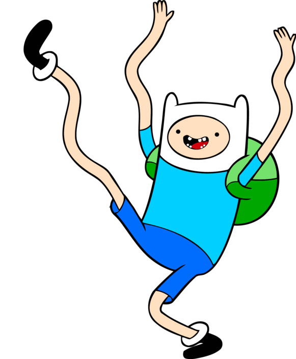
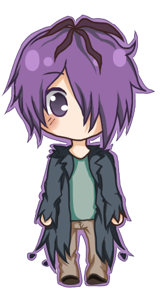
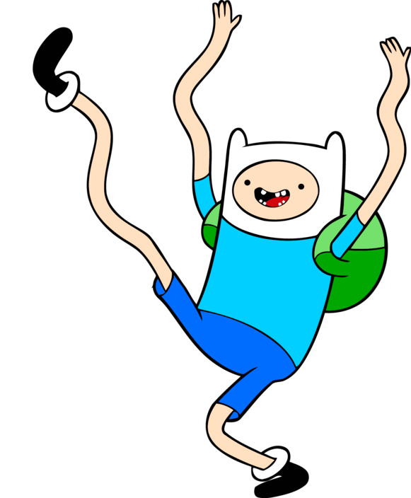
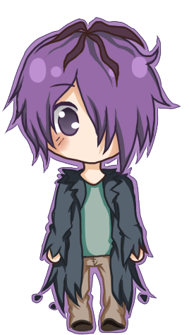
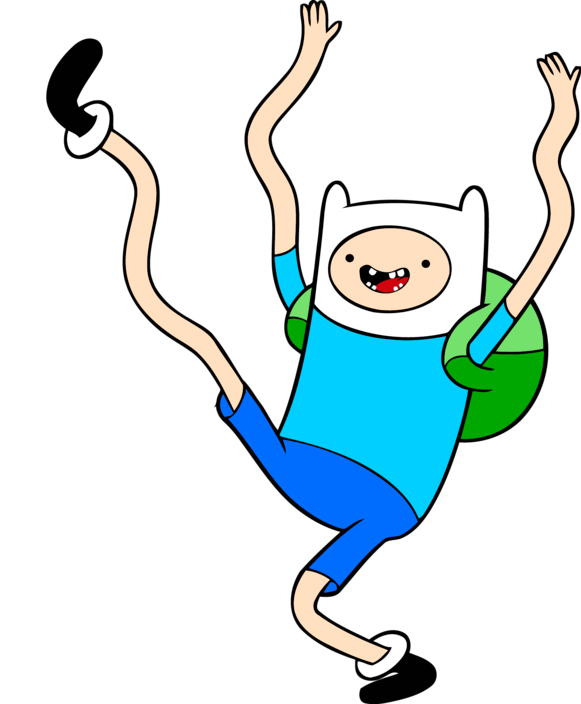
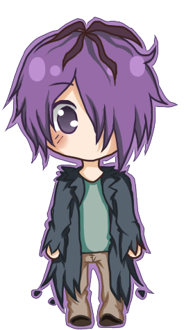

Welcome to The Crossing! In this game, you will control 3 humans and 3 blomfargles, and a hover car. The 6 people are on another planet,
trying to make their escape from a wasteland. They have a hover car that they are riding in, but they have found themselves trapped on one
side of a precipice! They have agreed to work together to overcome this obstacle. Unfortunately for the humans, their Blomfargle companions
are deadly, and will eat the humans if they ever outnumber them on either side of the precipice. Can you get the party across the precipice
without letting any humans die?
Objective: Get all of the Humans and
Blomfargles to the other side of the precipice.
Characters:
Humans:


Blomfargles:
Rules:
There must be at least 1 person in the Hover Car for it to move to the other side of the precipice.
There can only be 2 characters in the Hover Car at any time.
If a character is inside the Hover Car, that character count as being on the side of the precipice that the Hover Car is on.
If the number of Blomfargles outnumbers the number of Humans at any time, you lose the game.
If you get all the Blomfargles and Humans to the other side of the precipice, you win the game.
Game Functions:
When you start the game, there will be 6 characters on the screen: 3 Humans and 3 Blomfargles
on the left side of the precipice, and a Hover Car in the middle of the precipice. There will also be an
action log at the side of the screen. Under the action log, there is a table that displays the location of each character. At the bottom of
the screen, there will also be a button to reset the game, a button to return to the homescreen, and a button to reference the How to Play
Page (will open in a new tab).
When you click on a character:
If it is not in the Hover Car, it will move to the Hover Car.
If it is in the Hover Car, it will move out of the Hover Car.
It's position will update on the Side Tracker.
Clicking on the Hover Car will make it move to the other side of the precipice. There must be at least 1
character in the car to make the Hover Car move. If there is not, the Hover Car
will not move to the other side of the precipice, and a message will come up in the action log indicating that there is no driver for the
Hover Car to move.
If you try to add another character to the Hover Car and there are already 2 characters in the
Hover Car, the character that you tried to add to the Hover Car will remain
where it is, and you will get a message in the action log telling you that you could not add the character to the
Hover Car because it is full with 2 chracters.
If the Blomfargles ever outnumber the Humans on either side of the
precipice, you will lose the game immediately. A message will display in the action log notifying you that you lost the game. You
will not be allowed to interact with any of the items on the screen, unless you reset the game.
If you manage to get all characters on the other side of the precipice, you will win the game. The game will end as soon as the characters
make it to the other side, even if the chracters are still inside the Hover Car.
 


